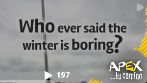

>PORTFOLIO/////
>> Content Creation
Some of my work on content creation.

An example of social media content creation for the client APEX - Ecuador.
ADOBE CC

Some of my work on content creation.

An example of social media content creation for the client APEX - Ecuador.